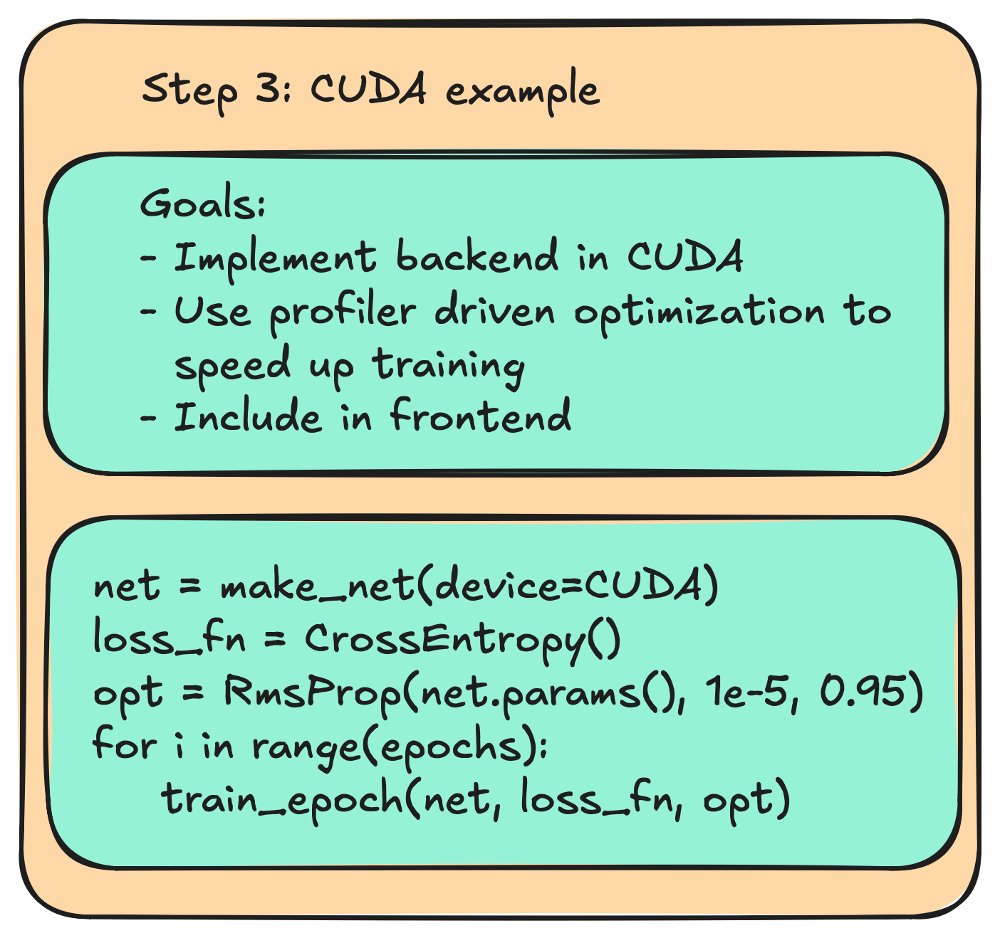
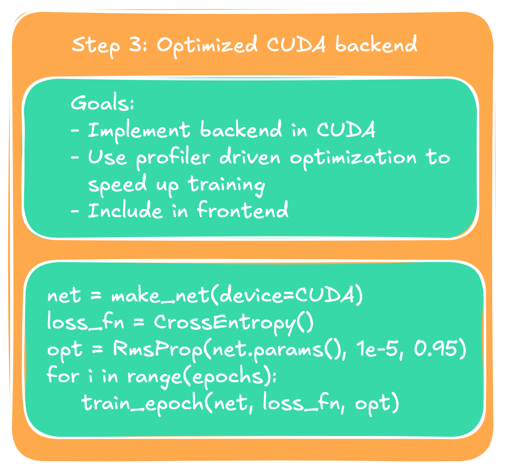
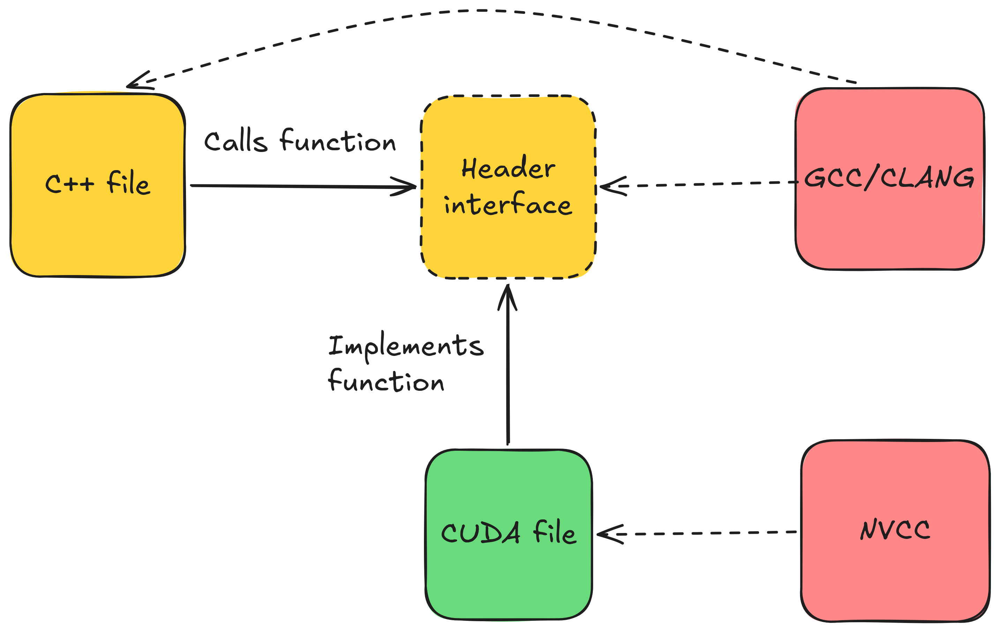
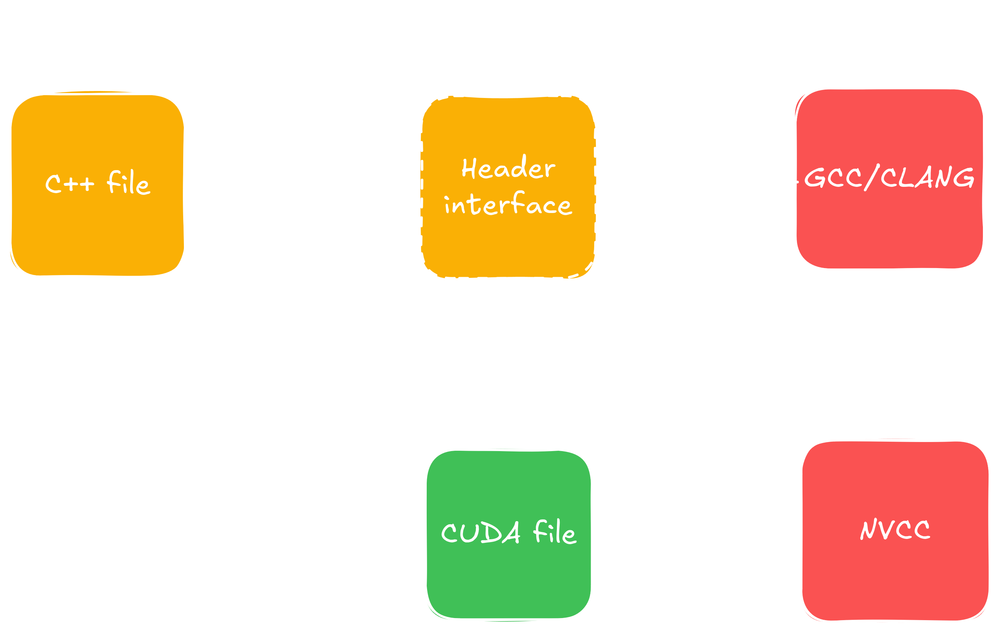
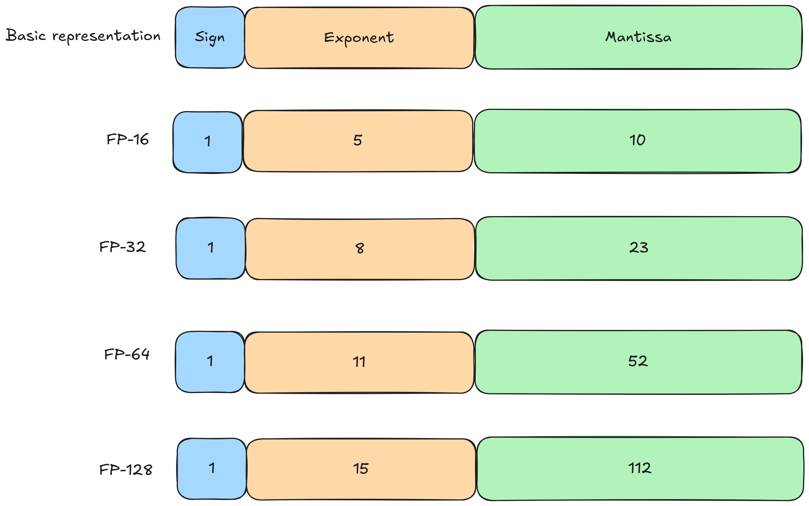
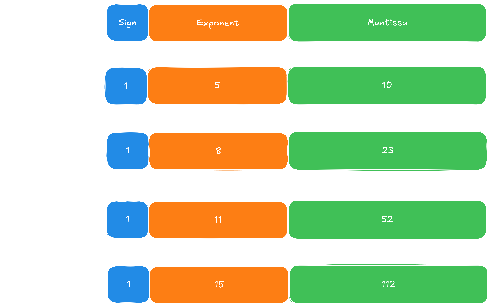

"Nobody wants just to go on. One wants to go on in an elegant way." — Alan Watts
Published: -
"Nobody wants just to go on. One wants to go on in an elegant way." — Alan Watts
Now that we have built our basic infrastructure, and we have a full pipeline, it is time for our long awaited part where we get to speed things up. This part will consist of two subparts. In part one, this post, we implement a CUDA backend and optimize it. We will use Nsight and NCU, two tools provided by NVIDIA, to profile our CUDA implementation, make deductions about bottlenecks, and do fixes.
The structure of this post is as follows: We first have a brief introduction into the main architecture and how we incorporate the CUDA backend. Because most of the CUDA implementation is straight forward I will outline how to do most, and we will exemplify with a few kernels that are a little more interesting. We will end up with a version of the backend that has a full CUDA backend and can be run end-to-end on the same MNIST instance we wrapped up in the previous post. For convenience I have made this a special release on my GitHub.


In part two we will optimize those kernels. Each optimization step is clearly marked by its headline, and we will see profiling outputs both before and after the fix, showing how much each step actually improved on our pipeline, and most interestingly to me personally: I give an explanation to each fix of why it actually worked. Additionally for those who want to follow along or maybe do even better fixes I have left every optimization step on a branch of the repository. You can find it here. Every finished optimization is clearly marked in its commit message, starting with an "Opt. [number]: 'Name of the fix'".
In the end we will have improved our code execution on our benchmark from 2.399s down to 0.206s, a speedup with a factor of 11.6x. I note here that the initial naive CUDA version before I started to optimize took way longer on the benchmark - 997.691s. However, here I forgot to implement the optimizers in CUDA, resulting in unnecessary memcopies across the devices. So there is a speedup of 4800x, but that is noise that had to be debugged, rather than optimized. Anyway, we're gonna cook the full MNIST example from 25s training time down to 5 seconds (includes non-CUDA parts including data loading etc., parts that are not measured by the benchmark). And on larger models with more training data the gap is only to grow. That's a good prospect I say, so let's get started building something we can optimize.
We build our CUDA backend in two steps. At first we have to set up the basic infrastructure needed to include everything. Following that we implement the missing kernels step by step.
At first we do have to include CUDA code against our project. We have to tell CMake to find CUDA and where its libraries are. Additionally, because not everyone has a CUDA capable GPU or simply may not want to use it we give it a flag that is enabled by default and switches off automatically if CUDA could not be found on the machine. We do so by
# CMakeLists.txt
if (CUDA)
include(CheckLanguage)
check_language(CUDA)
if(CMAKE_CUDA_COMPILER)
add_definitions(-D__CUDA)
enable_language(CUDA)
set(CMAKE_CUDA_STANDARD 20)
set(CMAKE_CUDA_STANDARD_REQUIRED ON)
else()
message(WARNING "Could not find CUDA on system. Compiling without CUDA enabled")
endif()
endif()
Note that we introduced a definition here as well through add_definitions(-D__CUDA). This will help
us identify whether CUDA has been compile time enabled, and we will use it for compile time dependent branches in code.
We have to make the CUDA headers accessible to the backend, and link CUDA against it. We are a little lazy here, so we
go a little unorthodox in CMake and simply look for all .cpp files and all .cu files and append those if desired. We do
get for the backend
file(GLOB_RECURSE CORE_SOURCES
computational_graph/*.cpp
data_modeling/*.cpp
module/*.cpp
system/*.cpp
training/*.cpp
utility/*.cpp
)
if(CMAKE_CUDA_COMPILER)
file(GLOB_RECURSE CUDA_SOURCES
computational_graph/*.cu
data_modeling/*.cu
module/*.cu
system/*.cu
training/*.cu
utility/*.cu
)
list(APPEND CORE_SOURCES ${CUDA_SOURCES})
endif()
add_library(BackendCore SHARED ${CORE_SOURCES})
target_include_directories(BackendCore PUBLIC
${CMAKE_CURRENT_SOURCE_DIR}
)
set_target_properties(BackendCore PROPERTIES
LIBRARY_OUTPUT_DIRECTORY "${PYTHON_MODULE_DIR}" # make sure Python-modules see backend
)
if(CMAKE_CUDA_COMPILER)
set_target_properties(BackendCore PROPERTIES
CUDA_SEPARABLE_COMPILATION ON
CMAKE_CUDA_ARCHITECTURES native # we can target alternative architectures here
)
find_package(CUDAToolkit REQUIRED)
target_include_directories(BackendCore PRIVATE
${CUDAToolkit_INCLUDE_DIRS}
)
target_link_libraries(BackendCore
CUDA::cudart
)
endif()With that we now should be able to readily include our first CUDA files into our C++ backend. Remember the definition we introduced in CMake? We will now use it and include our first kernel. The casual scalar multiplication will serve as a base example illustrating the workflow. Our Tensor class will get the following enhancements:
// src/backend/data_modeling/tensor.cpp
#ifdef __CUDA
#include "utility/cuda/cuda_common.cuh"
#include "data_modeling/cuda/tensor_ops.cuh"
#endif
// ...
Tensor Tensor::operator*(const ftype scalar) const {
Tensor res(dims, values->getDevice(), requiresGrad);
switch(values->getDevice()){
case Device::CPU:
for (tensorSize_t i = 0; i < values->getSize(); ++i) {
res.values->data()[i] = values->data()[i] * scalar;
}
break;
case Device::CUDA:
#ifdef __CUDA
cuda_impl::scalarmul(res, *this, scalar);
#else
__throw_runtime_error("Not compiled with CUDA");
#endif
break;
}
return res;
}
// ...What we do here is check the device of the tensor we call the operation on, and either allocate the result on the GPU or in host RAM. A switch-case is either gonna call the CPU version or the CUDA version. Additionally, we guard against errors with a conditional compilation, giving us meaningful output when CUDA has been requested, but the code has not been compiled against. We will use this structure, i.e. the switch-case with the error output in virtually every operation where we intend to branch off into CUDA code.
We also have to store the CUDA kernels somewhere. In the example we did a conditional include that only uses the CUDA headers when the compile time flag has been enabled. For ease of architecture we write kernels exactly where they belong. That is, respective CUDA kernels are in a directory named cuda in the same directory where the CPU version resides in. CUDA kernels that can be shared by multiple modules of the backend are in a folder with path src/backend/shared/cuda. Therefore the directory structure looks like the following now:
. ├── src │ ├── CMakeLists.txt │ ├── backend │ │ ├── computational_graph │ │ │ ├── activation_functions │ │ │ │ └── cuda │ │ │ ├── loss_functions │ │ │ │ └── cuda │ │ │ ├── tensor_ops │ │ │ │ └── cuda │ │ ├── data_modeling │ │ │ └── cuda │ │ ├── module │ │ │ ├── activation_functions │ │ │ │ └── cuda │ │ │ ├── layers │ │ │ │ └── cuda │ │ ├── shared │ │ │ └── cuda │ │ ├── system │ │ ├── training │ │ │ ├── loss_functions │ │ │ │ └── cuda │ │ └── utility │ │ └── cuda ...
Note that I only show directories in the tree above. An exception to the rule is the cuda folder in utility, but I'd wager this also contains what you'd expect it to contain. Mainly some wrappers for better error messaging and some generic functions checking device capability. With that we can now bring CUDA alive in our backend.
As previously mentioned, we don't really have to work out every kernel for this blogpost. For us now it is mostly important to look at the main points, and point out some kernels that are of more interest to us. The previous section introduced the basic pattern we will apply through our CUDA implementations. But it did not show yet how we get CUDA tensors in the first place. Given our preliminary thoughts in part 1 of this series, this is rather a plug-and-play operation. There, we came up with a tensorValues_t struct, whose purpose was to manage the underlying data of the tensors. We gave it a resize operation that every tensor constructor called, and malloc'ed memory in there. All we have to do now is to give it the device and call cudaMalloc instead, as in
// src/backend/data_modeling/tensor.cpp
void Tensor::tensorValues_t::resize(const tensorSize_t size) {
this->size = size;
switch (device) {
case Device::CPU:
values = static_cast<ftype*>(std::malloc(this->size * sizeof(ftype)));
break;
case Device::CUDA:
#ifdef __CUDA
cudaErrchk(cudaMalloc((void**) &values, this->size * sizeof(ftype)));
#else
std::__throw_invalid_argument("Not compiled with CUDA.");
#endif
break;
}
}After this we also have to make sure that we update the constructor of tensorValues_t accordingly, as well as all the copy operations and set-device operations. The latter has two ways: If we are on the GPU and we move to the CPU we have to malloc, copy from the device to the host, and free memory on the GPU. If we start out on the CPU and move to the GPU we have to go the other way. No surprises there essentially. Lastly we update our getters and setters of the tensorValues_t to fetch elements from either the CPU or the GPU. And that already concludes our memory management.
Because we designed our frontend with this in mind, we do not have to update the Python binding and can
simply instantiate a tensor now, telling it that it is a GPU resident as in t = Tensor.ones([2, 2], Device.CUDA),
and we will have a tensor that lives on the GPU.
Adding a few kernels is just what you think it is. In the previous section we took a look at how CUDA kernels are called through a switch-case statement, here is the CUDA implementation of the kernel we showed there:
// src/backend/data_modeling/cuda/tensor_ops.cuh
#ifndef __CUDA
static_assert(false, "File should not be included without CUDA enabled"); // for safety reasons
#endif // __CUDA
// includes here...
class Tensor;
namespace cuda_impl {
void scalarmul(Tensor& res, const Tensor& src, ftype scalar);
}
// src/backend/data_modeling/cuda/tensor_ops.cu
namespace { // anonymous namespace for all non-shared CUDA kernels in this project
__global__ void scalarmulKernel(ftype* const res, const ftype* const left, ftype scalar, tensorSize_t size) {
int gid = blockDim.x * blockIdx.x + threadIdx.x;
if(gid >= size)
return;
res[gid] = left[gid] * scalar;
}
}
namespace cuda_impl {
void scalarmul(Tensor& res, const Tensor& src, ftype scalar) {
constexpr int threadsPerBlock = 256;
const int blocksPerGrid = (src.getSize() + threadsPerBlock - 1) / threadsPerBlock;
scalarmulKernel<<<blocksPerGrid, threadsPerBlock>>>(res.getData(), src.getData(), scalar, src.getSize());
cudaErrchk(cudaDeviceSynchronize());
}
}
We have this modular design for clean code reasons, but also just because CUDA demands it. Essentially,
when implementing CUDA kernels we have to use .cu file endings, to signal NVCC that it's time for it to shine.
We could now either rename all our .cpp files to .cu, which would force every user to have a CUDA toolchain on
their machine, or we do what I did here: Have separate .cu files with conditional compilation, and we cleanly
separate CUDA code from pure C++ code. I note here that cudaMalloc and other utility functions given by CUDA
are pure C++ code included through #include "cuda_runtime.h" and can reside in .cpp files.


I also note here that the custom kernel we just implemented above is what CUDA engineers like to call "embarrassingly parallel". In other words, pretty trivial to implement functionally. Most of the kernels introduced in this new version follow this pattern, making for a quick win. A few exceptions however stand out, and I will present them as an optional section below. However, one thing I want to note is that the kernels have not been written all too terrible to start with. For instance, I used hardware intrinsics when possible. For instance, inside the sigmoid kernel we compute a single element using this kernel:
// src/backend/shared/cuda/common_kernels.cuh
namespace cuda_impl { // in cuda_impl because it is shared
template<typename T>
__device__ __forceinline__ ftype cudaSigmoid(const ftype x) {
if constexpr (std::is_same_v<T, float>) {
ftype z = expf(-fabsf(x));
ftype s = 1.0f / (1.0f + z);
return (x >= 0.f) ? s : z * s; // x < 0 => e^x/(e^x+1)
}
else if constexpr (std::is_same_v<T, double>) {
ftype z = exp(-abs(x));
ftype s = 1.0 / (1.0 + z);
return (x >= 0.0) ? s : z * s; // x < 0 => e^x/(e^x+1)
}
else {
static_assert(always_false<T>, "Unexpected value for ftype encountered");
}
}
}
The kernel lives in shared because it is used both in the forward pass and in the backward pass. A forced inline ensures that we do not call kernels from within a kernel, and a templated overload distinguishes whether to use single-precision-specific instructions (expf, fabsf) or generic instructions (exp, abs). The generic instructions take both single- and double-precision values, but we can play with other functions exposed through the CUDA API. While I did not verify this myself at this point, we can later revisit this and play with these functions to squeeze out performance. In theory we would expect the expf to be faster though, since it is explicitly designed for single-precision floating-point numbers. In general for floating points there is a trade-off between accuracy and speed. The larger our representation, the better our results, but the slower the computation itself. NVIDIA provides intrinsics for this that reduce the number of operations even further, at the cost of precision.
This optional is a brief historical breakdown of floating point numbers and how they evolved over time. A short disclaimer: This is obviously for the younger generation of engineers, including spoiled millennials like me, and I have not personally lived through all those events I describe in the following. It is based on my personal research through the wild west the internet has become, and could be wrong. I am confident the information is correct, but if you find something wrong, please let me know.
Essentially, when representing numbers we distinguish, roughly, two kinds of number representations: integer values and floating point numbers (FPs). Normally we learn the integer representation first, since that is the easier one - binary representation, conversion between decimal, octal, hexadecimal, and binary format, addition and subtraction in the respective number systems, and signed representation, nowadays the 2's complement (enabling us to push both addition and subtraction through an adder, hence saving silicon). Pretty straight forward once you get the idea.
FPs on the other hand are not that easy. I myself have never had an introduction into actual circuitry doing basic arithmetic on FPs, and the reason is that even basic operations get much more complicated than on integer values. On top of that, floating points come with a much larger set of operations we want to perform on them. Integers are normally constrained to addition and multiplication plus their inverse, unless you want to do something more fancy. Floating points, on the other hand, add trigonometric functions (sine, cosine, tangent), root operations such as the square root, exponentials, logarithms, and any other hip operation you can come up with. This makes it inherently harder to find a single representation that works well across all these operations, and for all intended purposes.
The result was that in the beginning of computing (relative to our modern standpoint that is) vendors had different ways to represent floats, mostly disagreeing on how many bits to use for representation and how to distribute them (see figure below). Intel CPUs did it differently than IBM, which did it differently than Seymour Cray, etc., leading to problems such as incompatibilities between hardware of different vendors, different user-facing results on each system, and each representation having its own set of quirks. To tackle the challenge Intel brought in Canadian mathematician William Kahan, and secretly they began working on an 'ultimate FP representation'.
At the same time, the IEEE called for a unified standard, and Intel allowed Kahan to submit his work, which led to what is now called the IEEE-754 standard. It is a standard that generally puts up the scaffolding for how FPs are computed nowadays, which is why if you work on code that is a little closer to hardware, you've probably seen the name many times already. It starts out with how to represent numbers - see the figure below. In addition, it also provides rules for how to round, how to control rounding errors, and exception handling. The two special FP types you have probably seen already, NaN and Infinity, have their root in this standard. The standard also defines a positive and negative zero FP representation, indicating whether we approached zero from the positive or the negative side.


Intel on its side developed the Intel 8087 math co-processor in 1980, 5 years before IEEE-754 officially launched. The centerpiece of it was the x87 architecture, which uses a stack-based register file. Kahan determined that an 80-bit representation of floating-point numbers is enough to remove numerical errors that arise from chaining floating point operations, which is why x86-64 processors still support 80-bit wide FP operations today. However, while mathematically sound, 80-bit sits awkwardly in a computer, since it is not a natural power of two. Computers, however, tend to fetch from addresses aligned to a power of two, resulting in alignment problems outside of the floating point unit. Modern computers that need genuine higher precision than 80 bits bank on the fact that hardware got a whole lot more efficient than it used to be back in the day, and moved directly up to 128-bit. Practically it also turned out that for most of us 32-bit and in some cases 64-bit are more than sufficient, making the 80-bit format obsolete today. Intel used later capability upgrades of its processors, starting with SSE and cemented by SSE2, to softly phase out the x87 FP unit, which it still carries only for backward compatibility reasons.
However, the story of floating point numbers does not end here. For decades this has worked just fine. Whoever follows recent developments, however, will have noticed that we all of a sudden encountered a new wave of floating point representations. For instance, the C++ standard just got enhanced with a few new FP types. Most are not a surprise, but looking closer we find an std::bfloat16_t type. CUDA supports a range of smaller types, mainly FP4, FP6, and FP8, along with the brainfloat type that C++ also has. But how come?
The answer lies in the rise of modern LLMs. Researchers found that for large models shorter representations are enough to still yield good results, leading to the notion of quantization. Here, smaller data types have been used to perform the floating point operations in LLMs, reaching good results with higher compute throughput and cutting the memory footprint. Google's brainfloat (BFloat) takes this idea a step further. Given that precision (the mantissa) matters less, but the exponent range needed in LLMs can be wide, this data type shifts the bit budget accordingly. For instance, the IEEE-754 half-precision (FP16) format assigns 10 bits to the mantissa and 5 bits to the exponent (plus 1 sign bit). BFloat16 keeps the sign bit but instead spends 8 bits on the exponent and 7 on the mantissa, reducing the mantissa by three bits and increasing the exponent by the same number. These are, however, very recent developments and can change in the future, so it's worth keeping an eye out.
Other optimizations consistently included in our first wiring up of CUDA are classic warp-level reductions by defining a volatile pointer to the beginning of the array, and then scan through the array based on thread-id, see below (we will switch to modern warp shuffle instructions in an optimization step down below). I also used shared memory where applicable, and bit-shifts for divisions by 2, which happens pretty much all the time for parallel reduction kernels.
// src/backend/module/activation_functions/cuda/activations.cu
namespace {
// example of a warp-level reduction kernel - pattern applied consistently throughout code
template
__forceinline__ __device__ void softmaxWarpSumReduce(volatile ftype* const input, const tensorSize_t stride, const int offset) {
static_assert(maxoffset > 0 && maxoffset <= 32, "Invalid value for template");
if(maxoffset == 32) {
if(offset + 32 < stride) input[offset] += input[offset + 32];
}
if(maxoffset >= 16) {
if(offset + 16 < stride) input[offset] += input[offset + 16];
}
if(maxoffset >= 8) {
if(offset + 8 < stride) input[offset] += input[offset + 8];
}
if(maxoffset >= 4) {
if(offset + 4 < stride) input[offset] += input[offset + 4];
}
if(maxoffset >= 2) {
if(offset + 2 < stride) input[offset] += input[offset + 2];
}
if(maxoffset >= 1) {
if(offset + 1 < stride) input[offset] += input[offset + 1];
}
}
} To the astute reader wanting to see optimization, arguably the more interesting part of this blogpost, I recommend to skip the next optional sections, covering two example kernels that were not that trivial, and that show my train of thought when I implemented the initial design. For those who are interested in seeing more what we will be dealing with before we optimize, the optional parts are for you.
The first kernel we take a look at is the one we will be spending most of our time on optimizing, the infamous $\mathcal{O}(N^3)$ matmul kernel, object of interest of any linear transformation in geometry and linear algebra as a whole.
// src/backend/data_modeling/cuda/tensor_ops.cu
namespace cuda_impl {
void matmul(Tensor& res, const Tensor& left, const Tensor& right) {
constexpr int threadsPerBlock = 256;
const int blocksPerGrid = (res.getSize() + threadsPerBlock - 1) / threadsPerBlock;
// sizes of the 2D matrices respectively
const tensorSize_t leftSize = left.getDims().get(-1) * left.getDims().get(-2);
const tensorSize_t rightSize = right.getDims().get(-1) * right.getDims().get(-2);
const tensorSize_t resSize = left.getDims().get(-2) * right.getDims().get(-1);
tensorSize_t leftOffset = 0;
tensorSize_t rightOffset = 0;
tensorSize_t resOffset = 0;
while(leftOffset < left.getSize()){
matMul2DKernel<<>>(res.getData() + resOffset, left.getData() + leftOffset, right.getData() + rightOffset,
left.getDims().get(-2), left.getDims().get(-1), right.getDims().get(-1), resSize);
leftOffset += leftSize;
rightOffset += rightSize;
resOffset += resSize;
}
cudaErrchk(cudaDeviceSynchronize());
}
} Because incoming tensors can be of arbitrary dimensions, I still stick to my own guns and only allow matmul on the last two dimensions. I.e. both in the C++ backend as well as in CUDA the basic assumption is that the matrix multiplication happens over two kernels with arbitrary dimensions, but the last two are the individual matrix sizes, as in (dim_1, dim_2, ..., n_rows, n_cols). The reason is basically because that saves me from a further abstraction level of indexing hell we already have anyway. But it also makes sense on an architectural level, because with this assumption we do have better memory access patterns than when spreading the matmul over non-aligned memory addresses.
As for the kernel, since I virtually already split the tensor down to its individual matrices, I can now use a simple 2D-matmul kernel that does the trick.
// src/backend/data_modeling/cuda/tensor_ops.cu
namespace {
__global__ void matMul2DKernel(ftype* const res, const ftype* const left, const ftype* const right,
const tensorDim_t leftRows, const tensorDim_t leftCols,
const tensorDim_t rightCols, const tensorSize_t resSize)
{
const int gid = blockDim.x * blockIdx.x + threadIdx.x;
if(gid >= resSize)
return;
const int resCol = gid % rightCols;
const int resRow = gid / rightCols;
const int leftBase = resRow * leftCols;
// C[i, j] = sum_{k=0}^{leftCols} A[i, k] * B[k, j]
ftype cij = 0;
for(int k = 0; k < leftCols; k++) {
cij += left[leftBase + k] * right[k * rightCols + resCol];
}
res[gid] = cij;
}
}Anyone who understands CUDA can already see a few openings for optimization, but we will get back to this later in this post.
The second kernel that I think is worth looking at is the softmax kernel (the forward version - the backward version largely mirrors this one for obvious reasons). Optimization of this kernel won't be part of this blogpost, so you will not see this one again, unless I expand on this series at a later point in time. It is interesting however because it shows pretty much any optimization pattern I chose to use in the first naive implementation. In my eyes it is still a very naive implementation, but perhaps it's not that naive after all. Anyway, once again I start with setting up the basic kernel calls. I start with the first out of the three options I employ here:
// src/backend/module/activation_functions/cuda/activations.cu
namespace cuda_impl {
/**
* @brief Does the softmax computation. Warning: Current implementation can only handle a stride of
* at max 512 * 512 = 262144 floating point numbers. If number exceeds this an exception is throws.
*
* For simplicity and for reasons of CUDA efficiency this function is split into 3 segments.
* 1. stride <= 32 -> we use warp level.
* 2. stride > 32 && stride < 512 -> we can fit one stride into one block.
* 3. stride > 512 -> we have to use two-stage kernel cascading for parallel reduction.
*/
void softmax(Tensor& res, const Tensor& in) {
const tensorSize_t stride = static_cast(in.getDims().get(-1));
const int nStrides = in.getSize() / stride;
// TODO: use some static struct here to prevent this guy from keeping on re-allocating memory
ftype* maxValues;
cudaErrchk(cudaMalloc(&maxValues, nStrides * sizeof(ftype)));
constexpr int warpSize = 32;
if(stride <= warpSize) {
assert(DeviceProperties::getWarpSize() == 32);
// each warp does one stride
constexpr int threadsPerBlock = 256;
constexpr int warpsPerBlock = threadsPerBlock / 32;
const int blocks = (nStrides + warpsPerBlock - 1) / warpsPerBlock;
//cout << "nStrides " << nStrides << " - in " << in << endl;
if(stride <= 2) {
findMaxKernelOneWarp<1> <<>>(maxValues, in.getData(), stride, nStrides);
}
// ... same for stride == 4, 8, and 16
else if(stride <= 32) {
findMaxKernelOneWarp<16> <<>>(maxValues, in.getData(), stride, nStrides);
}
cudaErrchk(cudaDeviceSynchronize());
if(stride <= 2) {
stableSoftmaxKernelOneWarp <<>>
(res.getData(), in.getData(), maxValues, stride, in.getSize());
}
// ... same for stride == 4, 8, and 16
else if(stride <= 32) {
stableSoftmaxKernelOneWarp <<>>
(res.getData(), in.getData(), maxValues, stride, in.getSize());
}
cudaErrchk(cudaDeviceSynchronize());
}
else {
// ... comes after the explanation of the block above
}
cudaErrchk(cudaFree(maxValues));
}
}
The softmax kernel consists of two subsequent parallel reductions. In part 2b I have shown in an optional section that softmax suffers from numerical instability due to the exponential functions it employs. To tackle that one can first find the maximum value, over which we normalize both numerator and denominator of a fraction, a standard math trick looking generically like $$\frac{e^x}{e^y} = \frac{e^x}{e^y} \cdot 1 = \frac{e^x}{e^y} \cdot \frac{e^{-a}}{e^{-a}} = \frac{e^{x-a}}{e^{y-a}}$$ The steps of a softmax are then
I might have overblown the initial softmax kernel a bit like this, since that was work of 3-4 mornings considering all the debugging I also put into it, but it was a nice one to practice and deepen my CUDA skills for me. So I went the hard way and split it into three distinct parts, depending on how large the distribution we softmax over was:
// src/backend/shared/cuda/common_softmax.cuh
namespace cuda_impl {
template
__forceinline__ __device__ void warpMaxReduce(volatile ftype* const input, const tensorSize_t stride, const int offset) {
static_assert(maxoffset > 0 && maxoffset <= 32, "Invalid value for template");
if(maxoffset == 32) {
if(offset + 32 < stride) input[offset] = cudaMax(input[offset], input[offset + 32]);
}
if(maxoffset >= 16) {
if(offset + 16 < stride) input[offset] = cudaMax(input[offset], input[offset + 16]);
}
// ... and so on down to maxoffset == 1
}
/**
* @brief Here we find the maximum within a stride. Assumption: One warp does exactly one stride!
* Reduction via warp reduce. res has the maximum values stored.
*/
template
static __global__ void findMaxKernelOneWarp(ftype* const res, const ftype* const input, const tensorSize_t stride, const tensorSize_t nStrides) {
assert(blockDim.x % 32 == 0);
const int tid = threadIdx.x;
const int gid = blockIdx.x * blockDim.x + tid;
const int strideNumber = gid / 32; // same as warp number
const int withinStrideOffset = gid % 32; // each warp covers up to 32 elements within a stride
const bool isNotPadded = withinStrideOffset < stride && strideNumber < nStrides;
extern __shared__ ftype smem[];
smem[tid] = isNotPadded ? input[strideNumber * stride + withinStrideOffset] : -INFINITY; // TODO: is this memory access pattern bad?
__syncthreads();
if(strideNumber >= nStrides) {
return;
}
volatile ftype* const start = smem + (tid / 32) * 32;
warpMaxReduce(start, stride, withinStrideOffset);
if(withinStrideOffset == 0) {
res[strideNumber] = start[0];
}
}
}
// src/backend/module/activation_functions/cuda/activations.cu
namespace {
// already shown above, just for reference
template
__forceinline__ __device__ void softmaxWarpSumReduce(volatile ftype* const input, const tensorSize_t stride, const int offset) {
static_assert(maxoffset > 0 && maxoffset <= 32, "Invalid value for template");
if(maxoffset == 32) {
if(offset + 32 < stride) input[offset] += input[offset + 32];
}
if(maxoffset >= 16) {
if(offset + 16 < stride) input[offset] += input[offset + 16];
}
// ... and so on until maxoffset == 1
}
/**
* @brief Numerically stable version of softmax kernel. Just as in findMaxKernelOneWarp we assume that stride <= warpsize.
* Numerical stability comes from computing the maximum values per row, see findMaxKernelOneWarp and argument maxValues.
*/
template
__global__ void stableSoftmaxKernelOneWarp(ftype* const res, const ftype* const input, const ftype* const maxValues,
const tensorSize_t stride, const tensorSize_t size) {
assert(blockDim.x % 32 == 0);
const int tid = threadIdx.x;
const int gid = blockIdx.x * blockDim.x + tid;
const int strideNumber = gid / 32; // same as warp number
const int withinStrideOffset = gid % 32; // each warp covers up to 32 elements within a stride
const int globalIdx = strideNumber * stride + withinStrideOffset;
const bool isNotPadded = withinStrideOffset < stride && globalIdx < size;
const auto maxValue = maxValues[strideNumber];
const ftype expVal = isNotPadded ? stableExp(input[globalIdx], maxValue) : 0;
extern __shared__ ftype smem[];
smem[tid] = expVal;
__syncthreads();
volatile ftype* const start = smem + (tid / 32) * 32;
softmaxWarpSumReduce(start, stride, withinStrideOffset); // TODO: do we need the bounds check here at all?
if(isNotPadded) {
res[globalIdx] = expVal / start[0];
}
}
} Essentially they are what you would expect mostly. There is some logic first to find out which element this thread is supposed to process. I have the name stride throughout the project to refer to a continuous line of elements of interest in memory. For softmax that would be the quantity $|x|$ already mentioned above. This is also the last assumed dimension of our input, so the input shape is expected to be (dim_1, dim_2, ..., stride). Same reasoning as with the matmul: better memory access pattern. That leads to improved performance, at least locally in the kernel.
The surrounding logic then is to find out which stride we belong to right now, e.g. which batch
we are processing. I do this currently via const int withinStrideOffset = gid % 32;,
which can lead us to wasted threads within a warp, but given that the alternative would be warp
divergence we don't really lose out here, but at least have more predictable execution patterns.
Whether this has a real cost will be interesting when we try to squeeze out everything out of
our code, but I suspect that the effect is either positive or negligible.
I also note that the indexing pattern I use here using the modulo operator is overhead. We will at
a later point in this post switch to better indexing using the y- and z-axes of regular
CUDA indexing patterns, which saves us a few operations per kernel, in this case an expensive division
through int strideNumber = gid / 32;, and an also expensive modulo through
int withinStrideOffset = gid % 32;. I note that if a modulo here was actually necessary
we could alternatively get it through a bitmask, since $32 = 2 ^ 5$.
We also employ shared memory, since this saves us writes back into cache memory or global memory. Each thread loads its operand into shared memory, then comes the template overloaded reduction. The templating is a compile time optimization, where the C++ host side selects the template overload and saves unnecessary if-checks if the stride is smaller than a certain size. Whether this is a good design decision is another story, since we trade-off device code size and host side instruction cycles against device side instruction cycles. But for now we leave it as is.
To keep this section from blowing out of proportion I sidestep the case when the stride fits into a block, it naturally derives from the more complicated case three, when the stride is too large for a block. Instead I just give you this most complicated case to round up the picture. The cascade of kernel calls happens on the host side of course:
// src/backend/module/activation_functions/cuda/activations.cu
namespace cuda_impl {
void softmax(Tensor& res, const Tensor& in) {
// ...
if(stride <= 32) {
// shown above...
}
else if (stride <= 512) {
// ....
}
else {
// stride does not fit into one block. We employ a 2 pass system, where pass one does a partial
// reduction, and pass two does a reduction over the partial reductions.
// each block handles up to 512 elements (2 * 256 threads)
constexpr int maxThreadsPerBlock = 256;
constexpr int elemsPerBlock = 2 * maxThreadsPerBlock; // constant folding
const int blocksPerStride = (stride + elemsPerBlock - 1) / elemsPerBlock;
assert_debug(blocksPerStride <= 512, "Stride too large for two-pass reduction");
const int totalBlocks = nStrides * blocksPerStride;
// ...
}
cudaErrchk(cudaFree(maxValues));
}
}
At first we choose the number of threads per block. Because it is a reduction kernel, for which in
every reduction cycle the number of active threads halves, we start out with 256 threads, instead of
the full 512 threads. In the first cycle each of those will process two elements: The one corresponding
with its current thread-id, and where applicable the one with index thread-id + size-of-block. This
saves us from launching overhead threads that do no work. A second optimization pattern employed here
is the division const int blocksPerStride = (stride + elemsPerBlock - 1) / elemsPerBlock;.
The pattern $\frac{a + b -1}{b}$ is really a ceil(a, b);, but cheaper in execution.
Because the stride is larger than one block we have to employ a cascaded reduction through asking multiple kernels to first reduce into partial reductions, then reduce further, like the following:
// src/backend/module/activation_functions/cuda/activations.cu
namespace cuda_impl {
void softmax(Tensor& res, const Tensor& in) {
// ...
if(stride <= 32) {
// shown above...
}
else if (stride <= 512) {
// ....
}
else {
// ...
ftype* partialMaxValues;
const tensorSize_t nPartialMax = totalBlocks;
cudaErrchk(cudaMalloc(&maxValues, nStrides * sizeof(ftype)));
cudaErrchk(cudaMalloc(&partialMaxValues, nPartialMax * sizeof(ftype)));
// pass 1: reduce each chunk of 512 elements to one partial max
// launch blocksPerStride blocks per stride
findMaxKernelLargePass1<<>>(
partialMaxValues, in.getData(), stride, blocksPerStride);
cudaErrchk(cudaDeviceSynchronize());
// pass 2: reduce partial maxes to one max per stride
int threadsPass2 = 1;
while(threadsPass2 < blocksPerStride) threadsPass2 <<= 1; // threadsPass2 needs to be power of 2
threadsPass2 = max(1, threadsPass2 / 2);
findMaxKernelLargePass2<<>>(maxValues, partialMaxValues, blocksPerStride);
cudaErrchk(cudaDeviceSynchronize());
// ...
}
cudaErrchk(cudaFree(maxValues));
}
} The kernel for the first pass looks like this:
// src/backend/module/activation_functions/cuda/activations.cu
namespace {
static __global__ void findMaxKernelLargePass1(ftype* const partialMaxValues, const ftype* const input,
const tensorSize_t stride, const int blocksPerStride) {
const int tid = threadIdx.x;
const int strideIdx = blockIdx.x / blocksPerStride;
const int blockWithinStride = blockIdx.x % blocksPerStride;
// block 0 within stride handles elements [0, 2*blockDim.x], block 1 within stride handles elements [2*blockDim.x, 4*blockDim.x], ...
const int inputBase = strideIdx * stride + blockWithinStride * 2 * blockDim.x;
extern __shared__ ftype smem[];
const tensorSize_t localIdx0 = inputBase + tid;
const tensorSize_t localIdx1 = inputBase + tid + blockDim.x;
// localIdx0 < (strideIdx + 1) * stride <- checks whether thread idx exceeds bounds of this stride; one stride per block at cudaMax
smem[tid] = (localIdx0 < (strideIdx + 1) * stride) ? input[localIdx0] : -INFINITY;
smem[tid + blockDim.x] = (localIdx1 < (strideIdx + 1) * stride) ? input[localIdx1] : -INFINITY;
__syncthreads();
// same reduction as findMaxKernelOneBlock from here
for(tensorSize_t offset = blockDim.x; offset > 32; offset >>= 1) {
if(tid < offset){
smem[tid] = cudaMax(smem[tid], smem[tid + offset]);
}
__syncthreads();
}
volatile ftype* start = smem;
if(tid < 32) {
start[tid] = cudaMax(start[tid], start[tid + 32]);
start[tid] = cudaMax(start[tid], start[tid + 16]);
start[tid] = cudaMax(start[tid], start[tid + 8]);
start[tid] = cudaMax(start[tid], start[tid + 4]);
start[tid] = cudaMax(start[tid], start[tid + 2]);
start[tid] = cudaMax(start[tid], start[tid + 1]);
}
if(tid == 0) {
partialMaxValues[blockIdx.x] = start[0];
}
}
}
Here the thread first does similar awkward arithmetics as in the single warp case to actually find out where in the processing machine it stands. The kernel then reduces the range it is covering into an array of partial reductions, which will then be passed down to reduction kernel two, which is the kernel we employ when we have a single block.
I want to point out the reduction scheme empployed here too. Looking at the loop we have
for(tensorSize_t offset = blockDim.x; offset > 32; offset >>= 1). The reduction
works until the offset is 32, and in each iteration we divide by two via a bitshift to the right
through offset >>= 1. That is a classical pattern we can employ in reduction algorithms,
but it only works cleanly when blockDim.x is a $2^n$ - with $n$ of course being an integer. Otherwise we
will likely miss values, because a bitshift to the right is really a floor division by two. Additionally
we'd have to perform boundary checks in the following warp level reduction. Say for example we had
blockDim.x==100. Then we'd get 50 for offset after one iteration, and then 25. In the raw reduction pattern
we'd have 32 threads that are supposed to cover 50 elements. Without a boundary check we'd reduce over range
[0-63], putting everything above index 49 twice into our final result.
I will spare you the kernel for pass 2, since it is very similar to pass 1. Insted I note that with this design, a two pass, we have given ourselves a limit on the stride ($|x|$) we can process. That is ok for us now, since so far we do not expect inputs of that size, but once we move to really large networks we will have to revisit that.
The last part of the softmax comes naturally from the rest:
// src/backend/module/activation_functions/cuda/activations.cu
namespace cuda_impl {
void softmax(Tensor& res, const Tensor& in) {
// ...
if(stride <= 32) {
// shown above...
}
else if (stride <= 512) {
// ....
}
else {
// ...
ftype* partialSums;
cudaErrchk(cudaMalloc(&partialSums, nPartialMax * sizeof(ftype)));
stableSoftmaxLargePass1<<>>(
res.getData(), partialSums, in.getData(), maxValues, stride, blocksPerStride);
cudaErrchk(cudaDeviceSynchronize());
// pass 2: reduce partial sums
stableSoftmaxLargePass2<<>>(partialSums, partialSums, blocksPerStride);
cudaErrchk(cudaDeviceSynchronize());
// final division pass: divide each exp value by its stride's sum
const int nBlocksDivision = (in.getSize() + maxThreadsPerBlock - 1) / maxThreadsPerBlock;
divideKernel<<>>(res.getData(), partialSums, stride, in.getSize());
cudaErrchk(cudaDeviceSynchronize());
cudaErrchk(cudaFree(partialMaxValues));
cudaErrchk(cudaFree(partialSums));
}
cudaErrchk(cudaFree(maxValues));
}
} There are no surprises here anymore, since this is just the same two-pass structure we already have seen above, just this time we perform a sum rather than a scan. I think it is safe to say we harvested enough from our softmax kernel and can move on to the optimization part. For everyone that is interested in the kernel implementations I refer to the code on GitHub.
Finally we have arrived at one of my personal highlights of this whole project, the CUDA backend optimization. We will be going through the optimization step-by-step and explain it and why it works. For everyone who wants to follow along I kept every step on a separate branch which you can find on my GitHub. There is a script I used for benchmarking, which may or may not have been updated in betwen optimization steps to reflect the new setting. You can find the script here.
As a short disclaimer, there was an out-of-bounds indexing bug I found later in the createContiguousCopyKernel
in file https://github.com/RobBa/dl_lib/blob/dev/cuda_optimization/src/backend/data_modeling/cuda/tensor_ops.cu. It
shows up rarely and thus had been undiscovered. If you follow along and your code crashes you can fix it by copying the version
at the end of the branch. However, the bug has no influence on the benchmarking and optimization results.
This example is benchmarked on a small example, because it was so slow to run. We will move on from that very quickly and get to larger examples, but for now we benchmark on a mere 5 epochs with 10 batches each. The batch-size remains 64 samples throughout this whole blog entry.